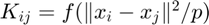
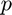
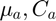
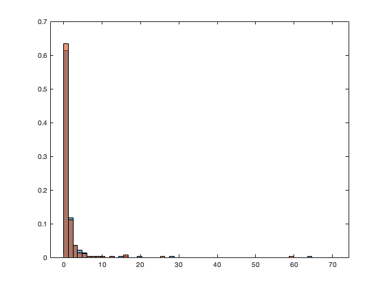
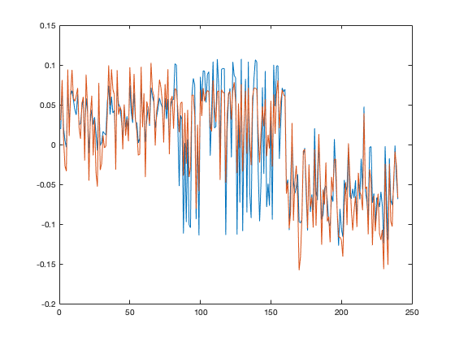

Section 4 "Kernel Methods": Theorem 4.1 (Couillet and Benaych-Georges, 2016)
This page contains demons in Section 4, Theorem 4.1. Spectral analysi of the distance-based kernel 
Contents
Basic settings
close all; clear; clc testcase = 'MNIST'; %% GMM, EEG, MNIST, fashion-MNIST, SVHN, CIFAR switch testcase case 'GMM' testcase_option = 'mixed'; %%% test case option for GMM data: means, var, orth and mixed otherwise selected_labels = [0 1 2]; %%% free to choose different classes end kernel = 'gauss'; %%% choice of kernel function: gauss and poly switch kernel case 'gauss' sigma2= 1; otherwise derivs = [5 -1 3]; %%% consider also [1 0 10] for 'orth' case end n = 240; %%% number of training data (in total) cs = [1/3, 1/3, 1/3]; k = length(cs); %%% number of classes if length(selected_labels) ~= k error('Error: selected labels and nb of classes not equal!') end
Fetch data
For GMM, choose data dimension  and statistics 
switch testcase case 'GMM' %%% testcase of Gaussian mixture model p = 256; %%% dimension of GMM data switch testcase_option case 'means' means = @(a) [zeros(a-1,1);1;zeros(p-a,1)]*5; covs = @(a) eye(p); case 'var' means = @(a) zeros(p,1); covs = @(a) eye(p)*(1+(a-1)/sqrt(p)*10); case 'orth' means = @(a) zeros(p,1); covs = @(a) toeplitz((4*(a-1)/10).^(0:(p-1))); case 'mixed' means = @(a) [zeros(a-1,1);1;zeros(p-a,1)]*2; covs = @(a) eye(p)*(1+(a-1)/sqrt(p)*5); %covs = @(a) toeplitz((4*(a-1)/10).^(0:(p-1)))*(1+(i-1)/sqrt(p)*4); end case 'EEG' load ../datasets/EEG_data.mat init_data = EEG_data; init_labels = EEG_labels; case 'MNIST' init_data = loadMNISTImages('../datasets/MNIST/t10k-images-idx3-ubyte'); init_labels = loadMNISTLabels('../datasets/MNIST/t10k-labels-idx1-ubyte'); case 'fashion-MNIST' init_data = loadMNISTImages('../datasets/fashion-MNIST/t10k-images-idx3-ubyte'); init_labels = loadMNISTLabels('../datasets/fashion-MNIST/t10k-labels-idx1-ubyte'); case 'SVHN' load ../datasets/SVHN_data.mat init_data = data; init_labels = y; case 'CIFAR' load ../datasets/CIFAR/cifar-10-batches-mat/data_batch_1.mat init_data = double(data'); init_labels = double(labels); end
Get statistics from data
For real-world datasets, estimate the statistics from whole database
switch testcase case {'EEG', 'MNIST', 'fashion-MNIST', 'SVHN', 'CIFAR'} [labels,idx_init_labels]=sort(init_labels,'ascend'); data=init_data(:,idx_init_labels); init_n=length(data(1,:)); p=length(data(:,1)); % noise_level_dB=0; %%% Add Gaussian noise to data % noise_level=10^(noise_level_dB/10); % Noise = rand(p,init_n)*sqrt(12)*sqrt(noise_level*var(data(:))); % images=images+Noise; data = data/max(data(:)); %%% Data preprecessing nb_selected_data = 0; for selected_label=selected_labels nb_selected_data = nb_selected_data + sum(labels==selected_label); end selected_data = cell(k,1); for a=1:k selected_label=selected_labels(a); selected_data{a} = data(:,labels==selected_label); end cascade_selected_data = cell2mat(selected_data'); mean_selected_data=mean(cascade_selected_data,2); %%% recentering of the k classes norm2_selected_data=mean(sum(abs(cascade_selected_data-mean_selected_data*ones(1,size(cascade_selected_data,2))).^2)); for a=1:k selected_data{a}=(selected_data{a}-mean_selected_data*ones(1,size(selected_data{a},2)))/sqrt(norm2_selected_data)*sqrt(p); end means = @(a) mean(selected_data{a},2); %%% compute the empirical means and covariances of all classes covs = @(a) 1/length(selected_data{a})*(selected_data{a}*selected_data{a}')-means(a)*means(a)'; end
build data matrix
switch testcase case {'EEG', 'MNIST', 'fashion-MNIST', 'SVHN', 'CIFAR'} X=zeros(p,n); W=zeros(p,n); for a=1:k data = selected_data{a}(:,randperm(size(selected_data{a},2))); X(:,sum(cs(1:(a-1)))*n+1:sum(cs(1:a))*n)=data(:,1:n*cs(a)); W(:,sum(cs(1:(a-1)))*n+1:sum(cs(1:a))*n)=data(:,1:n*cs(a)) - means(a)*ones(1,n*cs(a)); end case 'GMM' W=zeros(p,n); X=zeros(p,n); for a=1:k [U,S] = svd(covs(a)); W(:,sum(cs(1:(a-1)))*n+1:sum(cs(1:a))*n)=U*S^(1/2)*(U')*randn(p,cs(a)*n); X(:,sum(cs(1:(a-1)))*n+1:sum(cs(1:a))*n)=W(:,sum(cs(1:(a-1)))*n+1:sum(cs(1:a))*n)+means(a)*ones(1,cs(a)*n); end end
Build kernel matrix  and Laplacian
and Laplacian
covs_o=zeros(p); for a=1:k covs_o=covs_o+covs(a)*cs(a); end switch testcase case {'EEG', 'MNIST', 'fashion-MNIST', 'SVHN', 'CIFAR'} tau = 2/p*trace(X'*X/n); otherwise tau = 2/p*trace(covs_o); end switch kernel case 'poly' coeffs=zeros(1,length(derivs)); for i=1:length(derivs) coeffs(i)=derivs(length(derivs)+1-i)/factorial(length(derivs)-i); end f = @(x) polyval(coeffs,x-tau); case 'gauss' f = @(x) exp(-(x-tau)/(2*sigma2)); derivs=[f(tau) -1/(2*sigma2)*f(tau) 1/(4*sigma2^2)*f(tau)]; end K=f(diag(X'*X/p)*ones(1,n)+ones(n,1)*diag(X'*X/p)'-2*X'*X/p); DK = diag(K*ones(n,1)); L = DK - K; DK05 = diag(sqrt(diag(DK))); DKm05 = diag(1./sqrt(diag(DK))); nL = DKm05*K*DKm05; %%% Normalized Laplacian and scaled-normalized version rank1_shift=diag(DK05)*diag(DK05)'/sum(diag(DK)); scnL = n*(nL-rank1_shift);
Build (asymptotic) random equivalents
means_o=zeros(p,1); means_c=zeros(p,k); for a=1:k means_o=means_o+means(a)*cs(a); end for a=1:k means_c(:,a)=means(a)-means_o; end traces=zeros(k,1); traces_o=zeros(k,1); cotraces=zeros(k); cotraces_o=zeros(k); traces2=zeros(k,1); tracesD2=zeros(k,1); for i=1:k traces(i)=trace(covs(i)); traces_o(i)=trace(covs(i)-covs_o); traces2(i)=trace(covs(i)^2); tracesD2(i)=trace(diag(diag(covs(i)))^2); for j=1:k cotraces(i,j)=trace(covs(i)*covs(j)); cotraces_o(i,j)=trace((covs(i)-covs_o)*(covs(j)-covs_o)); end end trace_o = trace(covs_o); covs2_o = covs_o^2; trace2_o= trace(covs2_o); tracesD2_o = trace(diag(diag(covs_o).^2)); J = @(i) [zeros(n*sum(cs(1:i-1)),1);ones(n*cs(i),1);zeros(n*sum(cs(i+1:k)),1)]; J_=zeros(n,k); for i=1:k J_(:,i)=J(i); end d=diag(W'*W)/p; psi=d; for i=1:k psi=psi-traces(i)/p*J(i); end psi2=psi.*psi; tilde_psi=zeros(n,1); for i=1:k tilde_psi=tilde_psi+traces_o(i)/p*diag(J(i))*psi; end V=[]; for i=1:k V=[V J(i)/sqrt(p)]; end for i=1:k V=[V W'*means_c(:,i)/sqrt(p)]; end tilde_v = []; for i=1:k tilde_v=[tilde_v;W(:,sum(cs(1:(i-1)))*n+1:sum(cs(1:i))*n)'*(means(i)-means_o)/sqrt(p)]; end V=[V tilde_v psi sqrt(p)*psi2 sqrt(p)*tilde_psi]; A_p=-derivs(1)/(2*derivs(2))*p*[ones(k,k) zeros(k,k+4);zeros(k+4,2*k+4)]; A_sp11=zeros(k,k); for i=1:k for j=1:k A_sp11(i,j)=1/sqrt(p)*(traces_o(i)+traces_o(j)); end end A_sp=-1/2*sqrt(p)*[A_sp11,zeros(k,k+1),ones(k,1),zeros(k,2);zeros(k+1,2*k+4);ones(1,k),zeros(1,k+4);zeros(2,2*k+4)]; A_111=zeros(k,k); for i=1:k for j=1:k A_111(i,j)=-1/2*norm(means(i)-means(j))^2-derivs(3)/(4*derivs(2))/p*(traces_o(i)+traces_o(j))^2-derivs(3)/derivs(2)/p*cotraces(i,j); end end tmp=zeros(k,1); for i=1:k tmp(i)=-derivs(3)/(2*derivs(2))/sqrt(p)*(traces_o(i)); end A_1=[A_111,eye(k),-ones(k,1),tmp,-derivs(3)/(4*derivs(2))*ones(k,1),-derivs(3)/(2*derivs(2))*ones(k,1);eye(k),zeros(k,k+4);-ones(1,k),zeros(1,k+4);tmp',zeros(1,k+1),-derivs(3)/(2*derivs(2)),zeros(1,2);-derivs(3)/(4*derivs(2))*ones(1,k),zeros(1,k+4);-derivs(3)/(2*derivs(2))*ones(1,k),zeros(1,k+4)]; K_approx = -2*derivs(2)*(W'*W/p+V*(A_p+A_sp+A_1)*V')+(f(0)-derivs(1)+tau*derivs(2))*eye(n);
Plots
Compare eigenvalue distribution and isolated eigenvectors
P = eye(n) - ones(n)/n; K = P*K*P; K_approx = P*K_approx*P; eigs_K = eig(K); edges = linspace(.9*min(eigs_K),1.1*max(eigs_K),60); eigs_K_approx = real(eig(K_approx)); figure histogram(eigs_K,edges, 'Normalization', 'pdf'); hold on; histogram(eigs_K_approx,edges, 'Normalization', 'pdf'); [U,~]=eigs(K,3); [U_approx,~]=eigs(K_approx,3); step = 1; eig_vec_index = 2; figure plot(U(1:step:end,eig_vec_index)) hold on if U(:,eig_vec_index)'*U_approx(:,eig_vec_index) > 0 plot(U_approx(1:step:end,eig_vec_index)) else plot(-U_approx(1:step:end,eig_vec_index)) end %output = U(1:step:end, eig_vec_index)'; 